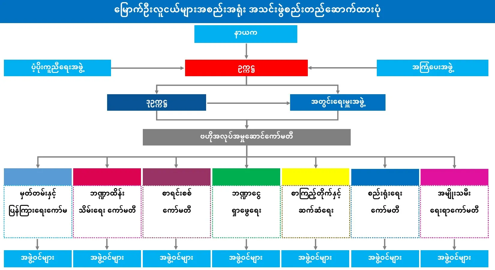

“လူငယ်တိုင်းသည် အကျင့်စာရိတ္တကောင်းမွန်ပြီး အတွေးအခေါ်နှင့်ရဲဝံ့စွာ ပြောဆို ပြုမူ ဆက်ဆံနိုင်ရမည်။”
ပန်းတိုင်
လူငယ်တို့၏ လိုအပ်ချက်များကို အထိရောက်ဆုံး အထောက်အကူပေးနိုင်သော သင်တန်းများနှင့် လှုပ်ရှားမှုများကို စွမ်းစွမ်းတမံအကောင်ထည်ဖော်ဆောင်ရွက်ပေးမည်။
ဖြစ်ပေါ်လာပုံသမိုင်း
ရက္ခိုင်တစ်မျိုးသားလုံး နှင့် တိုင်းပြည်၏လူငယ်ဆိုင်ရာ လိုအပ်ချက် အရလည်းကောင်း၊ မြောက်ဦးမြို့တော်၏ လူငယ်ထုကို ကိုယ်စားပြုနိုင်ရန်လည်းကောင်း မြောက်ဦးမြို့နယ်ရှိလူငယ်များကို အစည်းအဝေးခေါ်ယူလျှက် ၂၀၁၅ခုနှစ် ၊ နိုဝင်ဘာလ ၁၅ရက် ၊ တနင်္ဂနွေနေ့တွင် လေးမျက်နှာပုထိုး၏ တောင်ဘက်မျက်နှာရှိ မင်းရာဇာကြီးသိမ်၌ လူငယ်များဖြင့် မြောက်ဦးလူငယ်များအစည်း အရုံး(Mrauk-U Youths Association - M.U.Y.A)ကို စတင်ဖွဲ့စည်းခဲ့ ကြသည်။
ယုံကြည်ချက်
လူငယ်သည် အနာဂတ်၏ခေါင်းဆောင်များ ဖြစ်သည်။ ခေါင်းဆောင်ကောင်းများ ပေါ်ထွန်းလာရေးသည် ယနေ့လူငယ်များ ၏ပစ္စုပန်တွင် ခေါင်းဆောင်နိုင်မှု၊ ကြိုးစားအားထုတ်မှုနှင့် အပြုအ မှုများအပေါ်တွင် တိုက်ရိုက်မူတည်လျှက်ရှိသည်။ ခေတ်စနစ်ကို ရင်ဘောင်တန်းနိုင်ပြီးအကျင့်စာရိတ္တကောင်းမွန်သော အဖွဲ့အစည်း နှင့် နေထိုင်တတ်သည့် လူငယ်ထုတစ်ရပ်တည်ဆောက်နိုင်ရေး သည် ငြိမ်းချမ်းသာယာဖွဲ့ဖြိုးသော ရက္ခိုင်ပြည်ကြီးဖြစ်တည်လာရေး အတွက် အသက်သွေးတမျှအရေးကြီးသည်ဟု လက်ခံယုံကြည် သည်။
မျှော်မှန်းချက်
ခေတ်စနစ်ကို ရင်ဘောင်တန်းနိုင်ပြီး အဖွဲ့အစည်းနှင့်နေ ထိုင်တတ်သော ရက္ခိုင်လူငယ်ထုတစ်ရပ်ပေါ်ပေါက်လာရေးနှင့် ဖြောင့်မတ်မှန်ကန်ပြီး အကျင့်စာရိတ္တကောင်းမွန်သောမျိုးဆက်သစ် လူငယ်ခေါင်းဆောင်ကောင်းများ ပေါ်ပေါက်လာရေးကို မျှော်မှန်း သည်။
ရည်မှန်းချက်
စွမ်းရည်မြှင့်သင်တန်းများ ၊ အခြားသောအဖွဲ့ အ စည်းများနှင့် ကွန်ရက်ချိတ်ဆက်ဆောင်ရွက်မှုများဖြင့် ကောင်းမွန်မှန်ကန်သည့် ရှေ့ဆောင်လမ်းပြ ဆောင်ရွက် ခြင်းများမှတဆင့် အကျင့်စာရိတ္တကောင်းမွန်သော မျိုးဆက် သစ်လူငယ် ခေါင်းဆောင်ကောင်းများ ပေါ်ပေါက်လာရေး ကို ရန်မှန်းသည်။
ရည်ရွယ်ချက်များ
(၁) မြောက်ဦးမြို့ပေါ်၌ ခေတ်မီပြီး ရေရှည်တည်တံ့သောစာ ကြည်တိုက်တစ်ခုပေါ်ပေါက်လာစေရန်။
(၂) လူငယ်များ၏ စွမ်းဆောင်ရည်မြင့်မားရေးအတွက် စွမ်း ရည်မြင့်သင်တန်းများလုပ်ဆောင်ပေးရန်။
(၃) ရက္ခိုင်လူမျိုးနှင့် ရက္ခိုင်မျိုးနွယ်စုတို့၏ရိုးရာယဉ်ကျေးမှု အမွေအနှစ်များကို ကာကွယ်ထိန်းသိမ်းစောင့်ရှောက်မြှင့် တင်ရန်။
(၄) သဘာဝပတ်ဝန်းကျင်ထိမ်းသိမ်းရေးကို မိမိအဖွဲ့ဖြင့် သော် လည်းကောင်း၊ မိတ်ဖက်အဖွဲ့အစည်းများဖြင့်သော်လည်း ကောင်း ပူးပေါင်းဆောင်ရွက်ရန်။
(၅) မြောက်ဦးလူငယ်များအစည်းအရုံးသည် မြောက်ဦးလူငယ် ထုကို ကိုယ်စားပြုနိုင်စေရန်။
ဆက်သွယ်ရန်
ဖုန်း -
အီးမဲလ်- mrauku.ya@gmail.com
Facebook- MRAUK-U YOUTHS ASSOCIATION